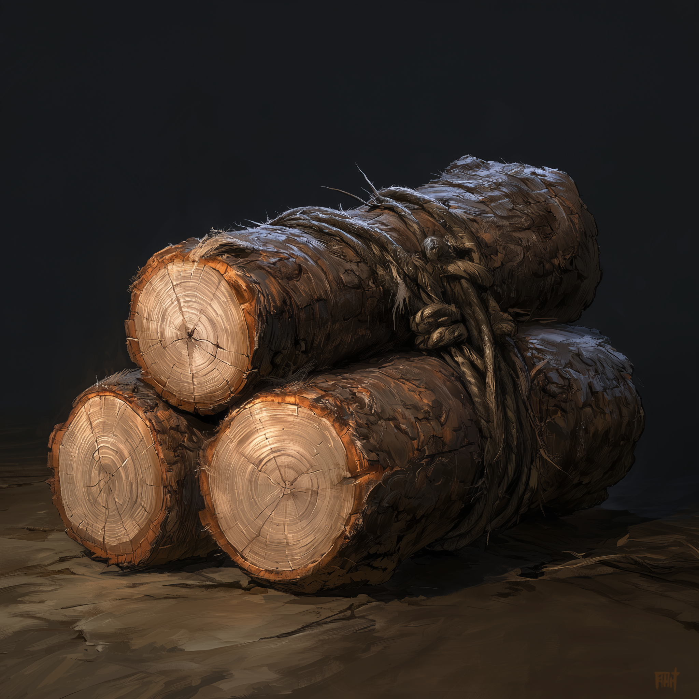
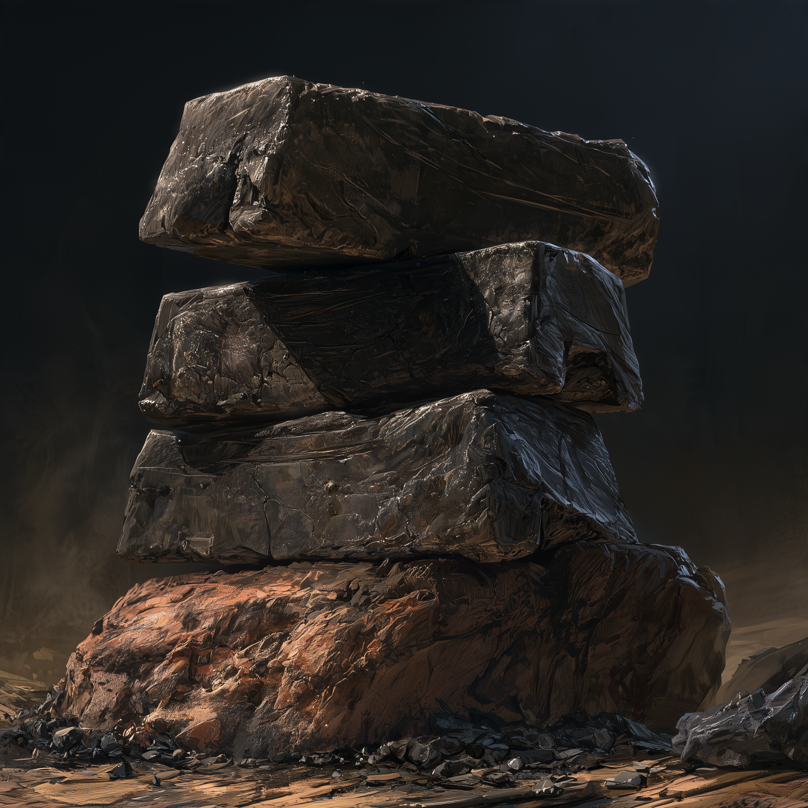
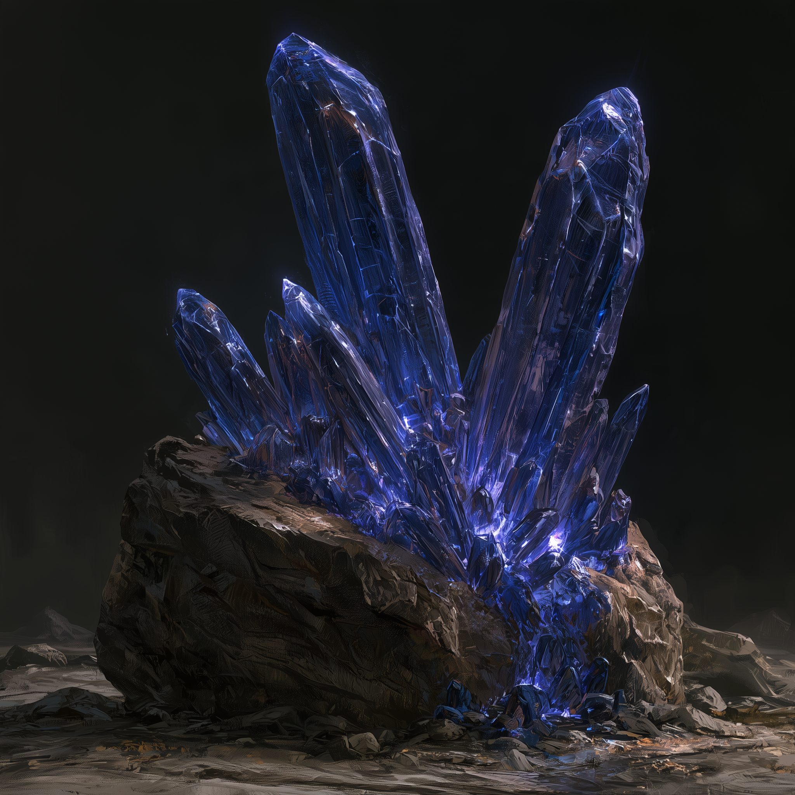

KALENDRATHVotre capitale
KALENDRATHVotre capitale
12 450Bois +320/h

8 320Fer +180/h

3 680Mana +64/h

9 140Nourriture +240/h
Prestige d’Empire 660 / 1 000
Exemple de jauge · Aucun rang défini Votre empire / Vue d’ensemble
Votre capitale
⚑ Présence hostile · Hordes PvEDes éclaireurs signalent un mouvement au-delà des murs.
Vos premières pierres · Guide de la cité
La Scierie est en cours d’amélioration. Consultez le chantier, puis observez la confirmation lorsqu’il se termine.
Voir mon chantier ↓◆ Votre capitale · Donjon ◆
Chantier en cours

Scierie
Niveau 6 → 7 · Simulation
En cours · 66 %Recherche en cours
Abondance
Niveau 2 → 3 · Simulation
En cours · 32 %Maquette interactive · Ressources, prestige, unités et progression fictifs. Aucun effet sur un compte. Illustrations du projet réalisées avec une IA.